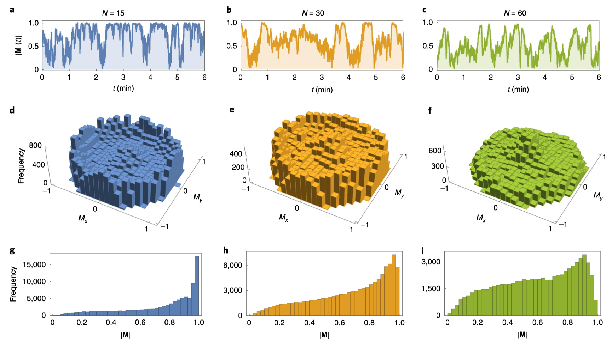
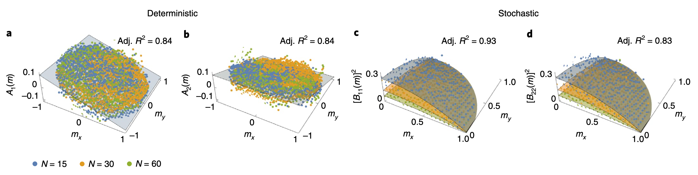
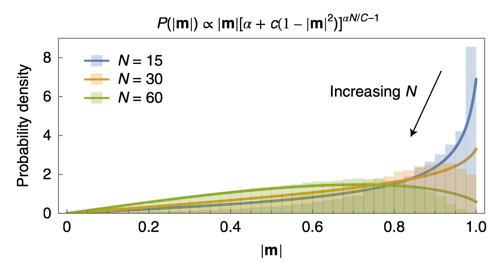

Noise-induced Schooling of Fish
1 Motivation
Theories of active matter have long been used to describe collective motion in systems ranging from self-propelled particles and bacteria to animal groups. In particular, the Toner–Tu theory predicts that long-range polar order can persist as \(N\to\infty\). In contrast, a 2020 study published in Nature Physics reported that, for the fish schools studied experimentally, highly polarized motion became more likely as group size decreased. The authors explained this behavior using a finite-size multiplicative-noise SDE. More strikingly, they inferred a remarkably simple microscopic pairwise copying mechanism that reproduces the functional form of the empirically extracted SDE. This microscopic-to-mesoscopic derivation feels very much like a physicist’s way of explaining a phenomenon and makes me admire it deeply.
2 Two Dimensional Random Walk: How does the radius scale with step number N?
Before discussing the interaction-induced ordering of fish schools, it is useful to first establish the polarization expected from a completely disordered group purely due to finite-size fluctuations. If we represent the direction of fish \(i\) as a unit vector \(\vec{v_i}\) and define the group polarization index as: \[ \vec M=\frac{1}{N}\sum _i \vec{v_i} \]
then in the totally random case, \(\sum _i \vec{v_i}\) is the result of a 2D random walk. Rewrite \(\vec{v_i}\) in the matrix form:
\[ \vec{v_i} = \begin{pmatrix} \cos\theta_i \\ \sin\theta_i \end{pmatrix}, \qquad \sum _i \vec{v_i}= \begin{pmatrix} \sum _i\cos\theta_i \\ \sum _i\sin\theta_i \end{pmatrix} \]
Given that \(\mathbb{E}[\cos\theta_i]=\mathbb{E}[\sin\theta_i]=0\) and their second moments: \[ \mathbb{E}[\cos^2\theta_i]=\mathbb{E}[\sin^2\theta_i]=\frac{1}{2\pi}\int_0^{2\pi}d\theta_i\,\sin^2\theta_i=\frac{1}{2} \]
The variance should be \[ \text{Var}[\cos\theta_i]=\text{Var}[\sin\theta_i]=\mathbb{E}[\sin^2\theta_i]-\mathbb{E}^2[\sin\theta_i]=\frac{1}{2} \]
We can add up independent variances and write the variance of \(\sum _i\cos\theta_i\) as: \[ \text{Var}[\sum _i\cos\theta_i]=\sum _i\text{Var}[\cos\theta_i]=\frac{N}{2} \]
In a coarse fashion, the radius has the scale \(\sqrt{\left(\sqrt\frac{N}{2}\right)^2+\left(\sqrt\frac{N}{2}\right)^2}=\sqrt{N}\). More precisely, since \(\cos\theta_i\) has a finite expectation and variance, the addition of itself should follow a Gaussian distribution as N goes to infinity. Therefore, the radius is given by:
\[ R=\sqrt{X^2+Y^2}, \qquad X,Y\sim \mathcal{N}(0,\frac{N}{2}) \]
The joint probability density of \(X,Y\) is
\[ p_{X,Y}(x,y) = \frac{1}{\pi N} \exp\left( -\frac{x^2+y^2}{N} \right) \]
Now represent the whole system in terms of radius \(r\) and angle \(\phi\), the joint density of \((R,\Phi)\) is
\[ p_{R,\Phi}(r,\phi) = p_{X,Y}(r\cos\phi,r\sin\phi)\,r = \frac{r}{\pi N} \exp\left( -\frac{r^2}{N} \right) \]
Integrating over the angular variable \(\phi\in[0,2\pi)\) gives the marginal distribution of \(R\) (Rayleigh distribution):
\[ p_R(r) = \int_0^{2\pi} p_{R,\Phi}(r,\phi)\,d\phi = \frac{2r}{N} \exp\left( -\frac{r^2}{N} \right), \qquad r\ge0 \]
The expectation of \(R\) is therefore
\[ \mathbb E[R] = \int_0^\infty dr\,r\,p_R(r) = \frac{2}{N} \int_0^\infty r^2 \exp\left( -\frac{r^2}{N} \right) dr=\frac{\sqrt{\pi}}{2}\cdot \sqrt{N} \]
The length of polarization index is \(\frac{R}{N}\), i.e. \[ \mathbb E[|\vec M|]=\frac{\sqrt{\pi}}{2}\cdot \frac{1}{\sqrt{N}} \]
This partly explains why researchers found that large groups have lower polarization index. However, experiments in Etroplus suratensis show that when \(N\) is small (15 fishes), the modulus of \(\vec M\) is approximately \(1\), which is highly unlikely to happen in a random walk system.

The researchers proposed a noise-induced model to explain this phenomenon, which is very intuitive. If the differentiation of polarization \(\vec M\) could be expressed in terms of the addition of a drift term and a random term:
\[ d\vec M=\mathbf{A}(\vec M)dt+\mathbf{B}(\vec M)\cdot \mathbf{\vec\eta}(t) \cdot dt \]
If \(\mathbf{B}(\vec M)\) is very large when \(|\vec M|\to 0\), then the random fluctuations will bring \(|\vec M|\) to approximately \(1\) again, thus this mechanism will make the system highly polarized. The final form of this SDE given by this article is:
\[ d\vec M=-\alpha \vec Mdt+\sqrt{\frac{\beta(1-|\vec M|^2)+\alpha}{N}}\cdot \mathbf{\vec\eta}(t) dt \]
Consistent with what we said before, the fluctuation term is the largest when \(|\vec M|\to 0\). Meanwhile, the smaller \(N\) is, the larger fluctuation is, so fish group will be more aligned with smaller \(N\). The following section will explain how this SDE is derived from data.
3 Extraction of an SDE from data
First, we assume that the mesoscopic dynamics can be approximated by an Itô SDE driven by Gaussian white noise (the markov property is implemented by choosing a proper timescale that could diminish the temperal correlation). Under this assumption, the dynamics can be written as (just set \(B\) to \(0\) if the process is deterministic): \[ d\vec M=\vec A(\vec M)dt+\mathbf{B}(\vec M)d\vec W= \begin{pmatrix} A_x \\ A_y \end{pmatrix}dt+ \begin{pmatrix} B_{11} \, B_{12} \\ B_{21} \, B_{22} \end{pmatrix} \begin{pmatrix} dW_x \\ dW_y \end{pmatrix}= \begin{pmatrix} A_xdt+B_{11}dW_x+B_{12}dW_y \\ A_ydt+B_{11}dW_x+B_{12}dW_y \end{pmatrix} \]
where \(dW_x\) and \(dW_y\) are the brownian increments in two different dimensions: \[ dW_x=\xi_x \cdot \sqrt{dt}\,,\,dW_x=\xi_y \cdot \sqrt{dt}\,, \qquad\xi_x,\xi_y\sim\mathcal{N}(0,1) \]
To extract the stochaticity, let’s define two expectations that pretty much like the moments of a random variable. The first one is called “first jump moment” and is defined as \(\mathbb{E}\left[\frac{d\vec M}{dt}\right]\). To calculate this, we need to keep in mind that the expectation of brownian increments is always \(0\), thus: \[ \mathbb{E}\left[\frac{d\vec M}{dt}\right]= \mathbb{E}\left[ \begin{pmatrix} A_x+\frac{1}{dt}B_{11}dW_x+\frac{1}{dt}B_{12}dW_y \\ A_y+\frac{1}{dt}B_{11}dW_x+\frac{1}{dt}B_{12}dW_y \end{pmatrix} \right]= \begin{pmatrix} A_x \\ A_y \end{pmatrix} \]
Therefore, the first jump momemt represents the deterministic part of the system, i.e. \(\vec A(\vec M)\) in the SDE. The “second jump moment” is defined as \(\mathbb{E}\left[\frac{(d\vec M)(d\vec M)^T}{dt}\right]\), again: \[ \mathbb{E}\left[\frac{(d\vec M)(d\vec M)^T}{dt}\right]= \mathbb{E}\left[\frac{\left(\vec A(\vec M)dt+\mathbf{B}(\vec M)d\vec W\right)\left(\vec A(\vec M)dt+\mathbf{B}(\vec M)d\vec W\right)^T}{dt}\right] \]
\[ =\mathbb{E}\left[\frac{\vec A\vec A^Tdt^2+\mathbf{B}d\vec WA^Tdt+Ad\vec W^T\mathbf{B}^Tdt+\mathbf{B}d\vec Wd\vec W^T\mathbf{B}^T}{dt}\right]= \mathbb{E}\left[\vec A\vec A^Tdt\right]+\mathbb{E}\left[\mathbf{B}d\vec Wd\vec W^T\mathbf{B}^T/dt\right] \]
Given that the brownian nature of \(d\vec W\), \(\mathbb{E}[d\vec Wd\vec W^T]\) should be \(\mathbf{I} \cdot dt\), therefore \[ \mathbb{E}\left[\frac{(d\vec M)(d\vec M)^T}{dt}\right]=\mathbb{E}\left[\vec A\vec A^T\right]dt+\mathbb{E}\left[\mathbf{B}\mathbf{B}^T\right]\frac{dt}{dt}\xrightarrow{dt\to0}\mathbf{B}\mathbf{B}^T \]
The second jump moment represents the stochastic part of the system, but it’s not directly \(\mathbf{B}(\vec M)\), it’s \(\mathbf{B}\mathbf{B}^T(\vec M)\) instead. Through experiments, we could easily calculate the first and second jump moments by replacing \(\frac{d\vec M}{dt}\) with \(\frac{\Delta \vec M}{\Delta t}\). By doing this, the researchers could obtain \(\vec A(\vec M)\) and \(\mathbf{B}\mathbf{B}^T(\vec M)\) at every \(\vec M\):

From the point cloud in Fig.a and Fig.b we could easily obeserve that the deterministic part of SDE want \(\vec M\) to be \(0\), and the dynamics in \(x\) direction and \(y\) direction are independent. More precisely, \(0\) is a fixed point on the 2D plane, and \(\vec M\) decreases proportional to its own modulus, therefore we can write the determinsitic part as \(-\alpha \vec M\).
For stochastic part, researchers found that the matrix \(\mathbf{B}\mathbf{B}^T(\vec M)\) approximately has the form: \[ \mathbf{B}\mathbf{B}^T(\vec M)\approx \text{const} \cdot \mathbf{I} \]
The simplest way to interpret this is to assume that $ $, thereby we could obtain \(B_{11}\) and \(B_{22}\). Note that this fractorization is not the only way to interpret data, there could be other possibilities. But in the spirit of simplicity, let’s first accept this.
From the data we can find that the noise is the strongest when \(\vec M \to 0\). This means the noise is actually what keeps fish aligned, instead of the determinstic force. Researchers tried many function candidates and finally decided that the form \(\sqrt{\frac{\beta(1-|\vec M|^2)+\alpha}{N}}\) fits data in the best way. The fish group is less aligned is written in \(\mathbf{B}\) is scaled with \(O(\frac{1}{\sqrt{N}})\). Also note that the \(\alpha\) in the deterministic part and stochastic part is the same, this will be explained in the following section.
4 From pair-wise copying to the macroscopic statistics
The SDE is cool but not very insightful, we need to know what causes this form instead of just focus on the statistic properties. The coolest part of this research is that they actually had done this. They proposed a pair-wise copying model that explained the complicated form of the SDE.
The microscopic model they propose actually contains two competing processes. First, each fish can spontaneously change its direction, this part counts for the deterministic decorrelation:
\[ \theta_i \xrightarrow{s} \theta_i+\mu, \qquad \mu\sim \mathcal{N}(0,\epsilon) \]
where \(s\) is the rate of spontaneous turning and \(\epsilon\) characterizes the variance of the turning angle. Second, a fish can randomly choose another fish and copy its direction:
\[ \theta_i+\theta_j \xrightarrow{c} 2\theta_j \]
Here \(c\) is the rate of pair-wise copying. Let us first consider the spontaneous turning process. It is convenient to represent the orientation of fish \(i\) by a complex number \(z_i=e^{i\theta_i}\), the polarization is then \(m=\frac{1}{N}\sum_i z_i\). After a spontaneous turn,
\[ z_i \rightarrow z_i e^{i\mu} \]
Since \(\mu\) is Gaussian, its characteristic function is given by \(\mathbb{E}[e^{i\mu}]=e^{-\epsilon/2}\). Therefore, the expected contribution of one fish after a spontaneous turning event becomes
\[ \mathbb{E}[z_i'] =z_i\mathbb{E}[e^{i\mu}]= z_i e^{-\epsilon/2} \]
The fraction of polarization lost in one event is consequently \(1-e^{-\epsilon/2}\). The event rate for \(N\) fish is \(Ns\), and each event will bring a \(-(1-e^{-\epsilon/2})z_i/N\) change to the whole \(m\). Therefore the decrease expectation of polarization in a unit time is: \[ \mathbb{E}\left[Ns[-(1-e^{-\epsilon/2})z_i/N]\right]=-s(1-e^{-\epsilon/2})\mathbb{E}[z_i]=-s(1-e^{-\epsilon/2})m \]
The decay is proportional to itself, classic exponential decay. Hence spontaneous turning generates the deterministic term
\[ \frac{d\vec M}{dt} = -\alpha \vec M, \qquad \alpha:=s(1-e^{-\epsilon/2}) \]
\(\alpha\) above is actually the first jump moment. Apart from this drift term, the spontaneous turning will also bring a stochastic part to \(\vec m\). To analyze the stochastic part of this spontaneous turning, we need to resort to its secon jump moment, i.e. \(\mathbb{E}\left[\frac{d\vec Md\vec M^T }{dt}\right]\).
For a single spontaneous-turning event of fish \(i\), \(\delta \vec M=\frac{1}{N}\left(\hat{\vec v}_i'-\hat{\vec v}_i\right)\). Using the complex representation, \(\delta m=\frac{1}{N}e^{i\theta_i}\left(e^{i\mu}-1\right)\). Therefore, the squared magnitude of the jump is
\[ |\delta m|^2 = \frac{1}{N^2} \left| e^{i\mu}-1 \right|^2 \]
Since \(\left|e^{i\mu}-1\right|^2=2(1-\cos\mu)\), we obtain
\[ \mathbb{E}[|\delta m|^2] = \frac{2}{N^2} \left( 1-\mathbb{E}[\cos\mu] \right) \]
Because \(\mathbb{E}[\cos\mu]=\mathbb{E}[e^{i\mu}]=e^{-\epsilon/2}\), this becomes
\[ \mathbb{E}[|\delta m|^2] = \frac{2}{N^2} \left( 1-e^{-\epsilon/2} \right) \]
Let \(dm\) represent the total polarization change within time \(dt\). When \(dt\to 0\), total event number \(Ns\cdot dt<<1\), therefore it is highly unlikely that two turning events happen in a single time frame: \[ \mathbb{E}[|d m_s|^2] =Ns \frac{2}{N^2} \left( 1-e^{-\epsilon/2} \right)=\frac{2s}{N} \left( 1-e^{-\epsilon/2} \right)=\frac{2}{N}\cdot\alpha \]
According to the calculation of the second jump moment in the last section, \(\mathbb{E}\left[\frac{(d\vec M)(d\vec M)^T}{dt}\right]=\mathbf{B}\mathbf{B}^T\approx\text{const}\cdot \mathbf{I}\) where \(\mathbf{B}\approx \sqrt{\text{const}}\cdot \mathbf{I}=B_{ii}\cdot \mathbf{I}\). Take the trace: \[ \text{Tr}\left(\mathbb{E}\left[\frac{(d\vec M)(d\vec M)^T}{dt}\right]\right)=\text{Tr}\left(\mathbf{B}\mathbf{B}^T\right) \] The L.H.S. is actually \(\mathbb{E}\left[dM_x^2+dM_y^2\right]=\mathbb{E}[|d m|^2]\), while the R.H.S. is \(2B_{11}^2\). Therefore, \[ \frac{2}{N}\cdot\alpha=2B_{11}^2\rightarrow B_{11}=B_{22}=\sqrt{\text{const}}=\sqrt{\frac{\alpha}{N}} \]
This explains why the same \(\alpha\) appears in both the deterministic and stochastic parts of the empirical SDE. Now consider pair-wise copying. If fish \(i\) copies fish \(j\), the change in polarization is
\[ \delta\vec M = \frac{1}{N} \left( {\vec v}_j-{\vec v}_i \right) \]
If \(i\) and \(j\) are chosen randomly, there is no preferred direction for this change. Therefore, \(\mathbb{E}[\delta\vec M]_{\mathrm{copy}}\approx 0\), meaning that pair-wise copying does not produce a deterministic alignment force at the mesoscopic level. However, its variance is nonzero:
\[ |\delta\vec M|^2 = \frac{1}{N^2} |{\vec v}_j-{\vec v}_i|^2 \]
Since both vectors have unit length,
\[ |{\vec v}_j-{\vec v}_i|^2 = 2\left( 1-{\vec v}_i\cdot{\vec v}_j \right) \]
Under the mean-field approximation, we should have the relation \(\mathbb{E}\left[{\vec v}_i\cdot{\vec v}_j\right]\approx|\vec M|^2\). Therefore,
\[ \mathbb{E} \left[ |\delta\vec M|^2 \right] = 2\cdot \frac{1-|\vec M|^2}{N^2} \]
Since there are \(Ncdt\) copying events happen in \(dt\), the accumulated variance per during \(dt\) is:
\[ \mathbb{E} \left[ |d\vec M_c|^2 \right]=2Nc\cdot \frac{1-|\vec M|^2}{N^2} \]
Use the same logic as before, \(\mathbb{E}\left[|d\vec M_c|^2\right]=\mathbb{E}\left[dM_x^2+dM_y^2\right]=\text{Tr}\left(\mathbf{B}\mathbf{B}^T\right)\), therefore, \[ 2Nc\cdot \frac{1-|\vec M|^2}{N^2}=2B_{11}^2\rightarrow B_{11}=B_{22}=\sqrt{\text{const}}=\sqrt{\frac{c(1-|\vec M|^2)}{N}} \]
Finally, combine spontaneous turning and pair-wise copying gives the mesoscopic SDE (Note that \(\mathbb{E}\left[|d\vec M|^2\right]\) of two separated process should be added together first and then take the sqaure root):
\[ d\vec M = -\alpha\vec M\,dt + \sqrt{ \frac{ \alpha+c(1-|\vec M|^2) }{N} } \,d\vec W \]
By identifying \(\beta=c\), we exactly recover the functional form extracted from experimental data:
\[ d\vec M = -\alpha\vec M\,dt + \sqrt{ \frac{ \alpha+\beta(1-|\vec M|^2) }{N} } \,d\vec W \]
This is the part I find particularly beautiful: the seemingly complicated multiplicative noise is not merely an empirical fitting function, but can emerge naturally from an extremely simple microscopic copying rule.
5 From Itô to Fokker–Planck: the stationary distribution of the polarization
Now that we have the SDE, we can derive the stationary probability distribution of the polarization modulus \(|\vec M|\). Define \(r=|\vec M|\) and \(G(r)=\alpha+c(1-r^2)\), then the SDE can be written as:
\[ d\vec M = -\alpha\vec M\,dt + \sqrt{\frac{G(r)}{N}} \,d\vec W \]
Let \(p(\vec M,t)\) denote the probability density on the two-dimensional polarization plane. The corresponding Fokker–Planck equation is
\[ \frac{\partial p}{\partial t} = \alpha\nabla\cdot(\vec M p) + \frac{1}{2N} \nabla^2 \left[ G(r)p \right] \]
where \(-\alpha\vec M p\) is the deterministic flow and \(D=\frac{G(r)}{2N}\) is the diffusion coefficient. Equivalently,
\[ \frac{\partial p}{\partial t} = -\nabla\cdot\vec J \]
where the probability current is
\[ \vec J = -\alpha \vec M\,p(\vec M) - \frac{1}{2N} \nabla\left[ G(r)p(\vec M) \right] \]
At the stationary state, assuming zero probability flux \(\vec J=0\). Because the system is rotationally symmetric, the two-dimensional probability density can be written in terms of the radial probability density \(p(r)\) as
\[ p(\vec M) = \frac{p(r)}{2\pi r}, \qquad r=|\vec M| \]
Substituting this into the radial component of the zero-current condition gives
\[ -\alpha r\frac{p(r)}{2\pi r} - \frac{1}{2N} \frac{d}{dr} \left[ G(r)\frac{p(r)}{2\pi r} \right] = 0 \]
Thus,
\[ \frac{d}{dr} \left[ \frac{G(r)p(r)}{r} \right] = -2N\alpha p(r) \]
Let \(q(r):=\frac{G(r)p(r)}{r}\), then \(p(r)=\frac{r\,q(r)}{G(r)}\). Substituting this back into the differential equation gives:
\[ \frac{dq}{dr} = -2N\alpha \frac{r}{G(r)} q(r) \]
Therefore,
\[ \frac{d\ln q}{dr} = -\frac{2N\alpha r}{G(r)} \]
Since \(G(r)=\alpha+c(1-r^2)\), we have \(\frac{dG}{dr}=-2cr\), hence
\[ -\frac{2N\alpha r}{G(r)}\,dr = \frac{N\alpha}{c} \frac{dG}{G} \]
Integrating both sides gives
\[ \ln q = \frac{N\alpha}{c}\ln G + \text{const} \]
and therefore
\[ q(r) \propto G(r)^{N\alpha/c} \]
Recalling that \(p(r)=\frac{r\,q(r)}{G(r)}\), we finally obtain:
\[ p(r) \propto r \left[ \alpha+c(1-r^2) \right]^{\frac{N\alpha}{c}-1} \]
Since \(r=|\vec M|\), this can also be written as
\[ p(|\vec M|) \propto |\vec M| \left[ \alpha+c(1-|\vec M|^2) \right]^{\frac{N\alpha}{c}-1} \]

Thus,
\[ \text{smaller group} \quad\Longrightarrow\quad \text{stronger finite-size noise} \quad\Longrightarrow\quad \text{stronger schooling} \]
emerges directly from the stationary distribution.